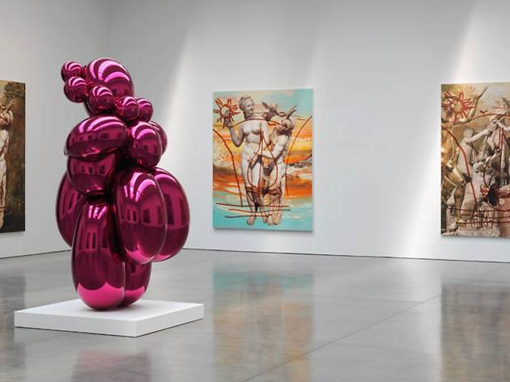
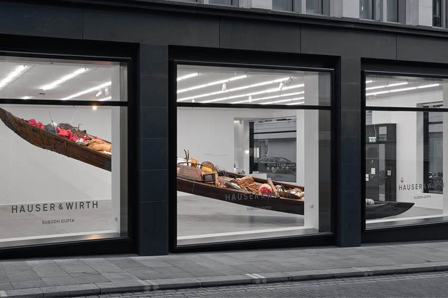

The Gagosian GalleryGagosian Gallery was founded in 1980, initially in partnership with the dealer, Leo Castelli, in SoHo. Since then, the gallery has produced museum-quality shows using its unprecedented global presence—16 exhibition spaces designed by world-renowned architects, including Caruso St John, Richard Meier, and Jean Nouvel. In addition to a vibrant contemporary program, the gallery often presents historical exhibitions focusing on artists like Andy Warhol and Picasso. |
 | |
|  |
Hauser and WirthSince 1992, the Hauser & Wirth gallery has challenged our ideas of what a “show” can be. Founded by Manuela Wirth and Ursula Hauser in Switzerland, the gallery has created exciting exhibitions, performances, happenings, environments, and more. They’ve also invested in multiple arts education efforts, including an Arthaus program for teenagers at their Somerset location and Mark Bradford's Art + Practice youth program in Los Angeles, as well as published over 100 titles. |
|